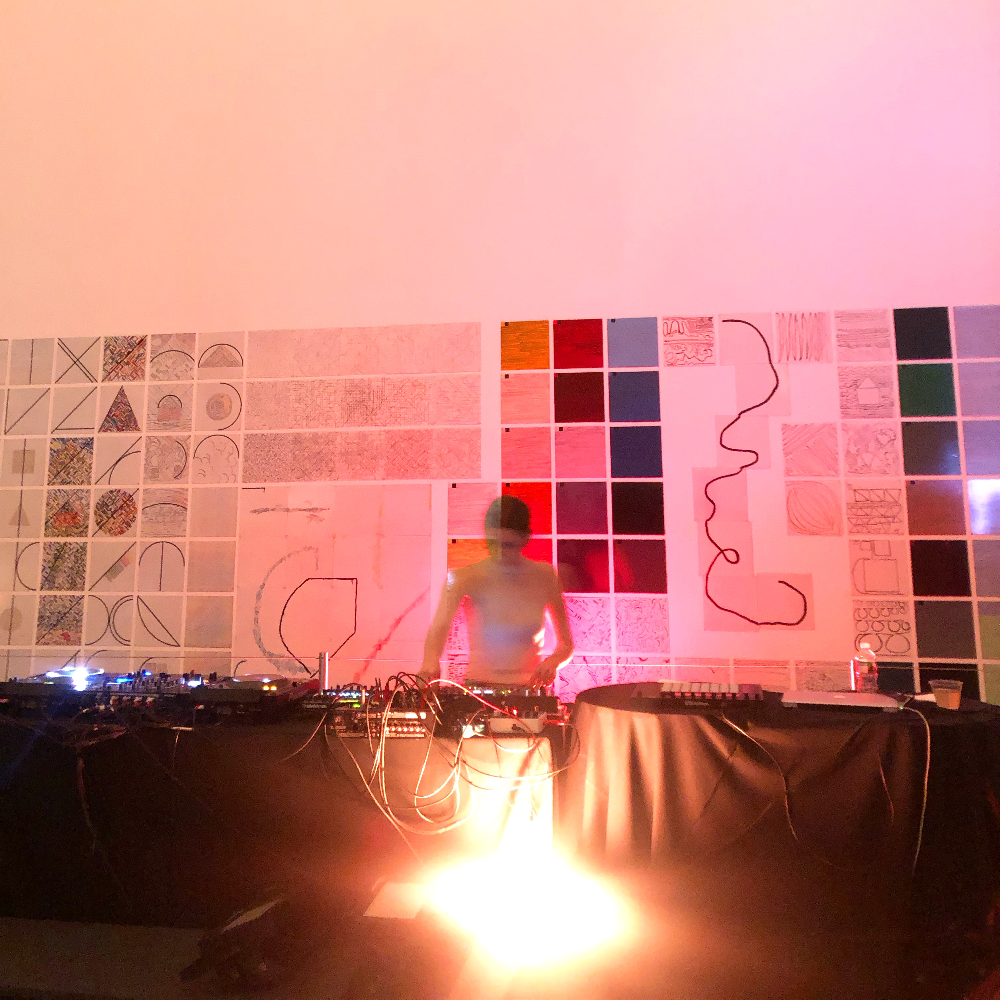

Stranger
Vibes: A Night of Art and
Technology with Aurora Halal,
Sam Rolfes, and Friends presented by PopRally by Adam Aslan
 Photo by Adam Aslan
Aurora Halal and Sam Rolfes created two vastly different live performances yet both were assisted by futuristic design like light studio Nitemind. Both kept the crowd entranced with the variety of stimulation and beauty that was flowing through each performance.
Video by Adam Aslan.
One of the first events at Moma that started after 9pm in while, Aurora Halal got the colored strobe soaked crowd dancing after Sam Rolfes awed the crowd with collaborators, performance artist Justin Shoulder and DJ Sharp Veins. Who doesnt like a live 3-D performance with projection-mapping!
Here is the press release:
Join PopRally for an immersive night of art and technology, featuring access to the exhibition New Order: Art and Technology in the Twenty-First Century, an open bar, and sound and light interventions by Aurora Halal, Sam Rolfes, and friends.
Get ready to experience the unfamiliar, the weird, and the strange as you encounter technology beyond anything you’re used to. Invited artists will manipulate the physical and digital worlds through light, sound, and performance inspired by MoMA’s New Order exhibition. Digital artist Sam Rolfes, performance artist Justin Shoulder, DJ Sharp Veins will present a real-time 3-D performance melding sound, physical movement projection-mapping, and 360-degree projections in the Marron Atrium. The evening will culminate with a live electronic music performance set by Aurora Halal, who will be surrounded by original visuals from light-design studio Nitemind.
Doors open at 9:00 p.m. Admission includes open bar, DJ set, performance, live electronic music performance, and after-hours access to New Order: Art and Technology in the Twenty-First Century.
----------------------------------------------------------------- Home